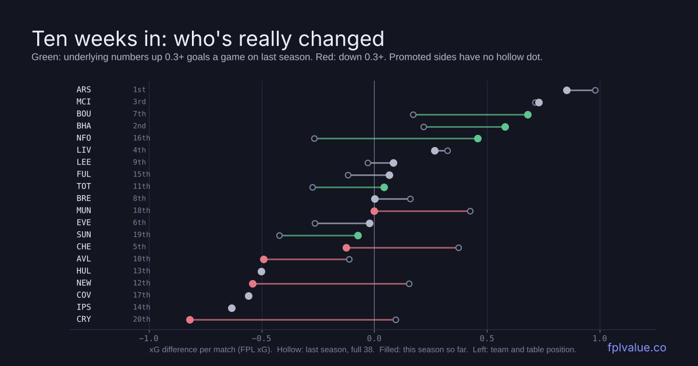
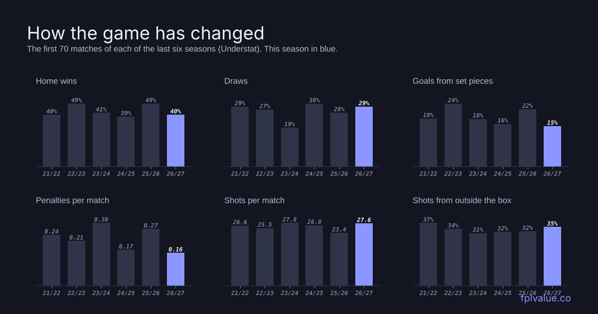
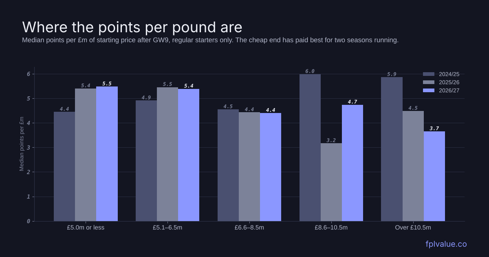

The first stretch: what's been good, what's been bad, and what's changed
There's no Premier League football until GW11, so it's a good moment to step back. We compared the first nine gameweeks with the same nine from each of the last two seasons, using FPL's own match data, and with six seasons of Understat shot data. Some of what we found is the usual early-season noise. Some of it looks like a real change in how the league is playing, and that matters for how you set up your squad for the next run of fixtures.

- Home advantage has shrunk. Home sides have won 40% of games, down from 50% at this stage last season. Draws are up to 28%.
- Set pieces and penalties have dried up. 15% of goals have come from set pieces (22% last season) and penalties are at their lowest rate in six seasons.
- Cheap defenders are still the best value in the game, for the second season running since defensive contribution points arrived. 11 of the top 20 scorers are defenders or goalkeepers.
- Haaland is reliable, not explosive. 68 points, 17 fewer than at this stage last season, and he hasn't been the top scorer in any single gameweek.
- Forest and Bournemouth are much better than the table says. Palace, Newcastle and Villa are worse.
How the game has changed

Home wins are down, but home teams aren't worse. Home sides have won 36 of the 90 games (40%), against 45 at the same point last season. Over the last 12 full seasons, only 2020/21, played in empty stadiums, had a lower rate. The interesting part is that home teams still create 53% of the xG and score 56% of the goals, almost exactly last season's split. What's changed is that close games are ending level. There have been 25 draws, against 19 last season. For FPL, this means you shouldn't lean too hard on "at home" when you pick between two similar players. The fixture's quality matters far more than the venue.
Set pieces have gone quiet. Last season was the set-piece season. 22% of goals in the first 70 games came from corners, free kicks and other set plays, and one in five goals was a header. This season it's 15%, the lowest of the six seasons we looked at, with 0.27 corner goals a game against 0.44. Headed goals are down from 21% to 13%. Defenders have still scored about as often (31 goals in their starts, 29 last season), but fewer of the league's goals now come from the moments a centre-back is most likely to score.
Penalties are rare. There have been 0.16 penalties per game in Understat's data, the lowest in six seasons and well down on last season's 0.27. That's why the model treats penalties as a separate piece of a player's projection rather than folding them into his xG. A penalty taker on a team that isn't winning any isn't worth much extra.
More shots, worse finishing. Teams are shooting more (27.6 shots a game, against 23.4 at this stage last season) and from further out, with 35% of shots from outside the box. FPL's xG is up from 2.68 to 2.91 a game, but goals have stayed level at 2.70. The league as a whole has scored about 19 goals fewer than its chances were worth. Our own research on finishing says that kind of gap doesn't get "paid back", but scoring rates do drift back towards xG from here. Expect slightly more goals per game after the break than before it.
More cards. 3.9 yellows a game (3.5 last season) and 18 reds already, against 10 at this stage last season. It's a small cost per player, but it's worth checking before you bring in a midfielder who picks up a booking every other game.
Defenders still rule, for the second year
Last season introduced defensive contribution (DefCon) points: 2 points for a defender with 10 clearances, blocks, interceptions and tackles, or a midfielder or forward with 12 including recoveries. They changed the shape of the game, and this season has carried on in the same way.
| After GW9 | 24/25 | 25/26 | 26/27 |
|---|---|---|---|
| DEF + GK in top 20 | 5 | 13 | 11 |
| £5.5m or less in top 20 | 4 | 14 | 10 |
| Pts per start: DEF | 2.56 | 3.64 | 3.62 |
| Pts per start: MID | 3.22 | 3.51 | 3.63 |
| Pts per start: FWD | 4.60 | 4.12 | 4.15 |
| DefCon share of pts | – | 7.2% | 7.6% |
The top of the points table shows it. De Cuyper (£4.5m at the start) is the highest scorer in the game with 69 points, one ahead of Haaland. Groß (£5.5m, 60), Vuskovic (£5.0m, 58), Tarkowski (£6.0m, 54) and Van Hecke (£5.0m, 53) are all in the top ten. Vuskovic, Brighton's third regular in the top ten, is the one most managers have missed: 58 points and owned by 7.7%. Be aware that Brighton's defence has had some luck (see below).

Per pound, the cheap end of the game has paid best for two seasons now. Regular starters priced at £6.5m or less return about 5.4–5.5 points per £1m, against 4.4 for the £6.6–8.5m bracket. The £8.6–10.5m bracket has recovered from a poor start last season, thanks to Isak (53), Palmer (45) and Saka (37). Remember that defenders give you points per pound, not hauls. Per start, defenders have scored 10+ points 5.5% of the time, against 8.8% for forwards. Our own defender research found the same thing: a back line of cheap, nailed defenders gives you a high floor, but your captain and your ceiling still come from further forward.
The premium problem
Only two players started the season at £10m or more: Haaland (£15.5m) and Fernandes (£12.0m). Last season there were five. Salah is no longer in the game, and Palmer and Saka started at £9.5m.
Haaland has 68 points from 9 goals, and he's in 79% of squads. That's good, but it's 17 fewer than at this point last season (85 from 11 goals), and he's never been the top scorer in a gameweek. His scores have been 2, 13, 9, 9, 6, 6, 13, 8 and 2. Captaining him every week has made 136 points. In eight of the nine weeks, the hindsight-best captain was a player costing £8m or less, and four times it was a defender. He's been a shield more than a weapon. That doesn't make him a sell. He still has the most xG in the league by a distance (6.6), and he's the model's top captain pick for GW10. But owning him isn't giving anyone an edge.
Fernandes is the disappointment. 35 points at £12.0m, 3 goals from 3.0 xG, and he's missed a game. The model has been too keen on him. It made him captain twice in four weeks, for 1 and 0 points. His price has dropped to £11.7m and his ownership to 21%.
The good
Arsenal are top with 24 points, two more than at this stage last season, with six clean sheets and the league's best underlying numbers (0.85 xG difference per game). City are five points better off than a year ago. Brighton are the big improvers in the table: 19 points against 12 a year ago, and a goal difference of +17 that's the best in the league.
Among players, the cheap Brighton pair, De Cuyper and Groß (now in 46–47% of squads), have been the picks of the season. Tavernier (£6.0m, 55 points, 5 goals from 3.7 xG) and Evanilson (£6.0m, 52, 4 goals and 4 assists) have made Bournemouth's attack the best value in the game. Rogers is the most-owned midfielder (54%) with 50 points, but he's scored 5 from 2.8 xG, so some of that is finishing that won't last.
The bad
Manchester United finished third last season. They're 17th now with 7 points, against 16 at this stage last season, and haven't kept a clean sheet. Their underlying numbers have dropped, from +0.42 xG difference per game last season to −0.07, but that's mid-table, not relegation form. They've scored 10 from 14.4 xG. A side 17th on results and 13th on chances should pick up.
Crystal Palace are the real collapse. They're 18th, they've conceded 21 (the most in the league), and they have the worst xG difference of anyone at −0.91 a game. Last season they were slightly better than average. Newcastle have dropped almost as far (−0.65, down 0.80 on last season) and are only 13th because their finishing has held up. Sunderland had 17 points at this stage last season and have 5 now, bottom of the league.
The worst finishers among players are Gonzalo (1 goal from 4.0 xG), Barry (4 from 6.4), Wissa (1 from 3.4) and Thiago (2 from 4.1). Of these, Barry is the interesting one. At £5.5m he has the second-most xG in the league, behind only Haaland, and our research says players like him keep scoring at their xG rate from here on.
Luck: the table vs the chances
The chart at the top of this post compares each team's xG difference per game this season (filled dot) with last season's (hollow dot). Three teams stand out.
Nottingham Forest are 19th with 6 points, but they're fourth on xG difference (+0.59 a game), up 0.85 on last season. That's the biggest improvement in the league. They've scored 6 goals from 14.7 xG, almost 9 goals short, the worst finishing in the league. This is the clearest "better than the table" case we've seen this season.
Bournemouth are 8th and third on xG difference (+0.65, up 0.47). Unlike Forest, their results have started to follow, with wins at Old Trafford and over Leeds.
Brighton are the other way round. Their numbers are better than last season, but they've scored 24 from 17.6 xG and conceded 7 from 13.3. That's about 12 goals of luck at both ends. They're a good side, but more like a fifth-placed side than a third-placed one.
Villa (16th on xG difference, 10th in the table) and Chelsea (10th on xG difference, 4th in the table, 19 goals from 13.5 xG) are the other two whose results are ahead of their numbers.
The promoted sides are holding on, for now
All three promoted teams are out of the bottom three. Hull and Ipswich have 11 points and Coventry 9. Last season's promoted trio had 17 (Sunderland), 11 (Leeds) and 10 (Burnley) at this stage. On the underlying numbers, though, all three are in the bottom six for xG difference, and Hull have conceded 10 from 13.3 xG against. Ipswich and United are the only sides yet to keep a clean sheet. Their defenders are cheap, but the clean-sheet odds behind them are poor.
How the model has done
We've tracked the model against FPL's own expected points for four weeks, GW6 to GW9. It's had the lower average error every week: 1.96 points per player against FPL's 2.23. Its top 20 picks scored more than FPL's top 20 in all four weeks. Captaincy has been the weak spot. Fernandes (1), Haaland (13), Fernandes (0) and Haaland (2) make 16 points in four weeks. The full table is on the track record page.
What to take into the break
- Keep a cheap, nailed back line. Two seasons of DefCon say it's the most reliable value in the game.
- Don't pay extra for penalty takers or "home" fixtures. Both have been worth less this season than last.
- Back the chances, not the goals. Barry, Thiago and Forest's attackers are getting the chances. Rogers and Brighton's back line have had the luck.
- Treat Haaland as a shield. Keep him if you have him, but if you're chasing, the points have come from elsewhere.
- Avoid Palace and Newcastle defenders. Their decline is in the chances, not just the results.
Method: FPL per-match player data for GW1–9 of 2026/27 (the site's own data), and the same gameweeks of 2025/26 and 2024/25 from the vaastav/Fantasy-Premier-League archive. xG and xG difference are FPL's figures, summed per team. Points per £m are for players with at least half the available minutes, priced at their GW1 value. Set pieces, penalties, headers and shot distance come from Understat's shot data, comparing the first 70 matches of each season, because Understat currently runs to 19 October. "Outside the box" means shots taken from more than 17% of the pitch length from goal. The numbers are generated by blog/roundup.py.